| Alumno | Octavio Duarte Villavicencio |
| Grupo | IDGS-101 |
| Docente | Roberto Vinicio Camacho Mendoza |
| Aplicación | Mantenimiento UTVT · proyecto reportes-mantenimiento |
| Tecnologías | React Native 0.88 + Expo SDK 58 (Expo Router) · Supabase (Auth, API REST, PostgreSQL con RLS, Storage) |
| Fecha | 12 de noviembre de 2026 |
Hoy los reportes de fallas de infraestructura (equipos de cómputo, iluminación, mobiliario, internet e instalaciones eléctricas) se hacen en persona o por mensajes informales. Así no hay folio ni historial, el estado de atención no se puede consultar y no queda evidencia.
La propuesta es Mantenimiento UTVT, una app móvil multiplataforma (Android/iOS) que se conecta a un backend en la nube. Estudiantes y personal administrativo inician sesión, registran un reporte con categoría, ubicación, descripción y una foto opcional, y consultan el estado de sus reportes. El personal de mantenimiento ve todos los reportes y actualiza su estado. Cada usuario solo accede a lo que le permite su rol, y esa regla la aplica el servidor, no la app.
| Requisito del caso | Cómo se resuelve |
|---|---|
| 1. Autenticación | Correo y contraseña contra Supabase Auth (servicio remoto). Devuelve un JWT de acceso (1 h) y un refresh token; se guardan cifrados en el dispositivo. |
| 2. Registro de reportes | POST /rest/v1/reportes con categoría, edificio, aula y descripción. El servidor asigna folio, usuario, estado y fecha de registro. |
| 3. Consulta de reportes | GET /rest/v1/reportes. Las políticas RLS de PostgreSQL devuelven solo los reportes del usuario (o todos si su rol es mantenimiento). |
| 4. Evidencia fotográfica | La foto se sube a un bucket privado de Supabase Storage. En la BD solo se guarda su ruta, y para verla se generan URL firmadas temporales. |
| 5. Seguridad | HTTPS, JWT, roles definidos en el servidor, Row Level Security, permisos por columna, validación en cliente y servidor, almacenamiento seguro de tokens. |
| Componente | Tecnología / servicio propuesto | Función en la solución | Justificación de la elección |
|---|---|---|---|
| Aplicación móvil (cliente) | React Native 0.88 + Expo SDK 58, TypeScript, Expo Router | Interfaz para iniciar sesión, registrar, consultar y dar seguimiento a reportes. Valida los datos antes de enviarlos. | Un solo código para Android e iOS. Expo incluye cámara, galería y almacenamiento seguro, y Expo Router permite proteger pantallas según haya sesión o no. |
| Servicio de autenticación | Supabase Auth (GoTrue), correo y contraseña | Registra usuarios, valida credenciales y emite el access token JWT (1 h) y el refresh token. También revoca sesiones. | Servicio gestionado basado en estándares (OAuth2/JWT). Guarda las contraseñas con hash bcrypt, limita intentos (rate limit) y permite confirmar correo, así que no hay que programar nada de eso a mano. |
| API de datos (servicio web) | API REST de Supabase (PostgREST) sobre HTTPS | Expone las operaciones de reportes (GET/POST/PATCH /rest/v1/reportes) en formato JSON. | Se genera a partir del esquema de la base de datos y recibe el JWT del usuario. Las reglas de acceso viven en la BD y no dependen del código de la app. |
| Base de datos en la nube | Supabase PostgreSQL con Row Level Security | Guarda perfiles (tipo y rol) y reportes (categoría, ubicación, descripción, estado, fecha, ruta de la foto). | Base relacional con restricciones CHECK, permisos por columna y políticas RLS que filtran cada fila según auth.uid() y el rol. |
| Almacenamiento de archivos | Supabase Storage, bucket privado evidencias | Guarda las fotografías en evidencias/<uid>/<id>.jpg y entrega URL firmadas temporales. | Separa los archivos binarios de la BD. El bucket limita tipo (JPG/PNG/WEBP) y tamaño (5 MB) en el servidor, y RLS impide escribir en la carpeta de otro usuario. |
| Gestión de sesión en el dispositivo | expo-secure-store (Android Keystore / iOS Keychain) | Guarda cifrados el access token y el refresh token. La sesión se renueva sola mientras la app está activa. | Evita dejar tokens en texto plano (AsyncStorage). Si alguien extrae los archivos de la app, no puede reutilizar la sesión. |
| Conectividad y modo sin conexión | @react-native-community/netinfo + AsyncStorage (cola local) | Detecta si hay internet. Sin conexión, el reporte se guarda en una cola local y se reintenta después. También guarda la última consulta en caché. | En el campus la red falla con frecuencia, y así el usuario no pierde lo que capturó. Cada reporte lleva un id_cliente único para que los reintentos no generen duplicados. |
| Cámara y galería | expo-image-picker, expo-image | Capturan o seleccionan la evidencia, muestran la vista previa y la imagen remota. | Se piden permisos en tiempo de ejecución con textos claros. Se usa quality: 0.6 y exif: false para reducir el peso de la foto y no enviar metadatos como la ubicación GPS. |
| Canal de comunicación | HTTPS (TLS 1.2+) con JSON | Transporta todas las solicitudes con los encabezados apikey y Authorization: Bearer <JWT>. | Cifra los datos en tránsito y evita la intercepción de credenciales y tokens. |
| Configuración / secretos | Variables EXPO_PUBLIC_* (solo URL y clave pública anon) | Indican a la app qué proyecto usar. | La clave anon es pública por diseño y la protección real está en RLS. La clave service_role nunca se incluye en la app. |
La app nunca accede directamente a la base de datos. Todas las operaciones son solicitudes HTTPS a los servicios de Supabase, con dos encabezados: apikey (identifica el proyecto, es pública) y Authorization: Bearer <JWT> (identifica al usuario). El servidor valida la firma del JWT, toma el uid y el rol y aplica las políticas antes de leer o escribir.
Leyenda: App móvil Supabase Auth API REST + PostgreSQL Storage
POST /auth/v1/token?grant_type=password · cuerpo { email, password } por HTTPS · encabezado apikey.200 + { access_token, refresh_token, expires_in: 3600, user }.400 invalid_credentials → la app muestra “Correo o contraseña incorrectos” (mensaje genérico), limpia la contraseña y vuelve al paso 2. Tras 5 fallos bloquea 60 s.GET /rest/v1/perfiles?id=eq.<uid> → { nombre, tipo, rol }) y desde aquí agrega Authorization: Bearer <JWT> a cada solicitud. Renueva el token antes de que expire con grant_type=refresh_token.POST /storage/v1/object/evidencias/<uid>/<id>.jpg (binario, Content-Type: image/jpeg) → Storage responde 200 { Key }.POST /rest/v1/reportes con JSON { categoria, edificio, aula, descripcion, foto_path, id_cliente } + Bearer JWT.CHECK y la política RLS (user_id = auth.uid()), y asigna folio, estado='pendiente' y fecha_registro=now().201 Created + el reporte creado. Errores: 400 datos inválidos, 401 token vencido, 403 sin permiso.GET /rest/v1/reportes?order=fecha_registro.desc + Bearer JWT. Respuesta: 200 + arreglo JSON (RLS devuelve solo los reportes del usuario, o todos si su rol es mantenimiento). Después pide las URL firmadas de las fotos (POST /storage/v1/object/sign/evidencias → { signedURL }, 10 min) y muestra la lista con folio, estado y fecha.| Código | Significado | Comportamiento de la app |
|---|---|---|
| 200 / 201 | Operación correcta / recurso creado | Muestra los datos o el folio asignado. |
| 400 | Credenciales o datos inválidos | Mensaje claro junto al campo. No se reintenta. |
| 401 | Token ausente, vencido o alterado | Intenta renovar con el refresh token. Si no se puede, cierra la sesión y pide iniciarla de nuevo. |
| 403 / 42501 | Sin permiso (RLS o privilegios) | “No tienes permiso para realizar esta operación”. |
| 5xx / timeout / sin red | Servicio no disponible | Guarda el reporte en la cola local y muestra la última consulta en caché. |
| # | Riesgo | Descripción / impacto | Medida de prevención | Implementación en la solución |
|---|---|---|---|---|
| 1 | Credenciales o claves expuestas en la app | Cualquiera puede descompilar un APK. Si la app incluye una clave de administrador, el atacante obtiene control total de la BD. | Solo incluir claves públicas. Las reglas de acceso se aplican en el servidor. | La app solo trae la URL y la clave anon. La service_role nunca sale del panel de Supabase. .env está excluido de Git. |
| 2 | Acceso a reportes de otro usuario (IDOR / control de acceso roto) | Cambiar un ID en la solicitud podría exponer o modificar reportes ajenos. | Autorización en el servidor por fila y por rol, sin confiar en filtros del cliente. | Políticas RLS: select si user_id = auth.uid() o rol mantenimiento. update solo para mantenimiento. El rol lo asigna el servidor y el usuario no puede cambiarlo. |
| 3 | Robo o manipulación del token de sesión | Un token en texto plano puede robarse y usarse para suplantar al usuario. | Tokens de vida corta, firmados y guardados en almacenamiento seguro. | JWT firmado de 1 h con refresh token rotatorio, guardado en SecureStore (Keystore/Keychain). signOut() revoca la sesión. Un JWT alterado recibe 401. |
| 4 | Inyección y datos maliciosos o inválidos | Texto con SQL o scripts, campos enormes o categorías inventadas pueden corromper datos o causar fallos. | Validar en cliente y servidor. Usar consultas parametrizadas y listas blancas. | La app valida longitudes y categorías. La BD repite las reglas con CHECK. PostgREST parametriza las consultas. Permisos por columna: el cliente no puede enviar user_id, estado ni fecha_registro. |
| 5 | Subida de archivos maliciosos o excesivos | Un ejecutable disfrazado o un archivo enorme pueden llenar el almacenamiento o servir malware. | Lista blanca de tipos MIME, límite de tamaño y nombres generados por el sistema. | El bucket acepta solo JPG/PNG/WEBP de hasta 5 MB (validación en el servidor). El nombre es <uid>/<uuid>.jpg, no el que elige el usuario. Sin upsert no se puede sobrescribir. |
| 6 | Fuerza bruta y enumeración de usuarios | Probar contraseñas masivamente o saber qué correos existen a partir de mensajes distintos. | Limitar intentos y usar mensajes genéricos. | Rate limit de Supabase Auth, bloqueo local de 60 s tras 5 fallos y el mensaje único “Correo o contraseña incorrectos”. Política de contraseña de mínimo 8 caracteres con mayúsculas, minúsculas y números. |
| 7 | Intercepción de tráfico (MITM) | En el Wi-Fi del campus, un atacante podría leer credenciales. | Usar solo HTTPS/TLS. | Todos los endpoints de Supabase son https://. Android bloquea el tráfico HTTP sin cifrar por defecto. |
| 8 | Fuga de información en errores y metadatos | Mensajes técnicos o EXIF con GPS revelan detalles internos o la ubicación del usuario. | Mensajes controlados y metadatos mínimos. | traducirError() convierte los errores en mensajes amigables sin trazas. Las fotos se toman con exif: false. |
Por defecto, el cliente de Supabase en React Native guarda la sesión en AsyncStorage, que es un archivo sin cifrar dentro del almacenamiento de la app. En un teléfono con root, en un respaldo o con malware, el refresh token se podría copiar y usar para obtener nuevos access tokens sin conocer la contraseña. Por eso implementé un adaptador (src/lib/almacenSeguro.ts) que guarda la sesión en Android Keystore / iOS Keychain con expo-secure-store. Como SecureStore admite valores de unos 2 KB, la sesión se divide en fragmentos.
Por qué es necesaria: el token es en la práctica la credencial del usuario mientras la sesión está activa. Protegerlo con cifrado del sistema operativo evita que el robo de archivos del dispositivo se convierta en suplantación. Se complementa con la expiración corta del JWT y con la revocación al cerrar sesión.
Otras dos medidas adicionales: (a) idempotencia: cada reporte lleva un id_cliente UUID único, así que si un reintento ocurre después de una respuesta perdida, el servidor responde con conflicto (23505) y no se duplica. (b) Principio de mínimo privilegio en la BD: anon no tiene ningún permiso y authenticated solo puede insertar 6 columnas y actualizar estado; además no existen políticas de borrado de reportes ni de evidencias.
-- Extracto de supabase/schema.sql grant insert (categoria, edificio, aula, descripcion, foto_path, id_cliente) on public.reportes to authenticated; grant update (estado) on public.reportes to authenticated; -- RLS lo limita a mantenimiento create policy "reportes_select" on public.reportes for select to authenticated using (user_id = (select auth.uid()) or (select public.es_mantenimiento())); create policy "reportes_insert_propio" on public.reportes for insert to authenticated with check (user_id = (select auth.uid()) and (foto_path is null or split_part(foto_path, '/', 1) = (select auth.uid())::text));
Todas las URL son relativas a https://<proyecto>.supabase.co. Encabezados comunes: apikey: <anon> y, salvo en el inicio de sesión y el registro, Authorization: Bearer <access_token>.
| Operación | Método | Endpoint / servicio | Datos enviados | Respuesta esperada | Seguridad / restricción |
|---|---|---|---|---|---|
| Registrar cuenta | POST | /auth/v1/signup · Auth | { email, password, data: { nombre, tipo } } | 200 + usuario (y sesión si no requiere confirmar correo) | Política de contraseña. Un trigger crea el perfil con rol usuario; el rol mantenimiento no se acepta del cliente. |
| Iniciar sesión | POST | /auth/v1/token?grant_type=password · Auth | { email, password } | 200 { access_token, refresh_token, expires_in, user } · 400 si es inválido | HTTPS, rate limit, mensaje genérico, bloqueo local tras 5 fallos. |
| Renovar token | POST | /auth/v1/token?grant_type=refresh_token · Auth | { refresh_token } | 200 + nuevos tokens | Refresh token de un solo uso (rotación). Solo mientras la app está activa. |
| Consultar perfil y rol | GET | /rest/v1/perfiles?id=eq.<uid> · API | JWT | 200 [{ nombre, tipo, rol }] | RLS: solo el propio perfil. Sin permisos de escritura. |
| Subir evidencia | POST | /storage/v1/object/evidencias/<uid>/<uuid>.jpg · Storage | Binario de la imagen + Content-Type | 200 { Key } · 400/413 tipo o tamaño inválido · 403 carpeta ajena | Bucket privado, JPG/PNG/WEBP ≤ 5 MB, solo en la carpeta propia, sin sobrescritura. |
| Registrar reporte | POST | /rest/v1/reportes · API + PostgreSQL | { categoria, edificio, aula, descripcion, foto_path, id_cliente } | 201 + reporte con folio, estado, fecha_registro | CHECK en BD, permisos por columna, RLS user_id = auth.uid(), id_cliente único. |
| Consultar mis reportes | GET | /rest/v1/reportes?order=fecha_registro.desc&estado=eq.<estado> | JWT (+ filtro opcional) | 200 [ … ] | RLS devuelve solo los propios (o todos si es mantenimiento). Límite de 100. |
| Consultar detalle | GET | /rest/v1/reportes?id=eq.<id> | JWT + id | 200 [ reporte ] o [] si no es suyo | Un ID ajeno devuelve vacío y la app muestra “no tienes permiso”. |
| Obtener URL de evidencia | POST | /storage/v1/object/sign/evidencias/<ruta> · Storage | { expiresIn: 600 } | 200 { signedURL } | Solo el dueño o mantenimiento. La URL caduca a los 10 minutos. |
| Actualizar estado | PATCH | /rest/v1/reportes?id=eq.<id> · API | { estado: "en_proceso" | "resuelto" } | 200 + reporte actualizado · [] si no tiene permiso | Solo el rol mantenimiento (RLS) y solo la columna estado. |
| Cerrar sesión | POST | /auth/v1/logout · Auth | JWT | 204 | Revoca el refresh token y borra la sesión, la caché y la cola local. |
Porque todo lo que se distribuye dentro de una app es público. Un APK o IPA se puede descompilar en minutos (con apktool o strings, por ejemplo) y las variables de entorno del bundle de JavaScript quedan en texto legible. Una clave administrativa como la service_role de Supabase ignora las políticas RLS, así que con ella un atacante podría leer, modificar o borrar los reportes y fotos de toda la universidad, crear usuarios o escalar privilegios. Además no se podría revocar sin publicar una nueva versión, y los usuarios que no actualicen seguirían exponiéndola. Lo correcto es que la app use solo la clave pública más el token del usuario autenticado, y que las operaciones privilegiadas (asignar el rol de mantenimiento, por ejemplo) se hagan en el servidor: desde el panel, con una Edge Function o con un backend propio que guarde el secreto.
trim).now()) para que no se pueda falsificar.id_cliente único y el botón se deshabilita mientras se envía.Estas validaciones mejoran la experiencia, pero no sustituyen a las del servidor: los mismos límites existen como CHECK, permisos por columna y restricciones del bucket, porque alguien podría llamar a la API sin usar la app.
id_cliente, aunque un intento anterior sí haya llegado, no se duplica.Las pruebas se ejecutaron en un emulador Android (Pixel, API 37) con la app en Expo Go, contra el proyecto real de Supabase. Usé tres cuentas de prueba: Ana López (estudiante), Bruno Díaz (administrativo, dueño del reporte #1) y Personal de Mantenimiento (rol asignado desde el SQL Editor). En el emulador, la cámara es simulada, por eso la evidencia muestra una escena de prueba en lugar de una foto real. Las pruebas de seguridad se pueden repetir desde la pantalla 🛡️ Pruebas de seguridad de la app, que lanza solicitudes no autorizadas contra el backend real.
| # | Prueba | Objetivo | Pasos / datos de entrada | Resultado esperado | Resultado obtenido |
|---|---|---|---|---|---|
| P1 | Autenticación correcta e incorrecta | Comprobar que solo entran usuarios válidos. | a) Correo válido + contraseña errónea. b) Correo y contraseña correctos. | a) 400, mensaje genérico, sin acceso.b) 200, token y acceso a “Mis reportes”. | a) Muestra “Correo o contraseña incorrectos” y limpia la contraseña. b) Entra y muestra nombre y tipo de usuario. Aprobada (Fig. 1–2) |
| P2 | Registro de reporte con evidencia | Verificar el envío completo a la nube. | Categoría “Equipo de cómputo”, Edificio D, Lab. 3, descripción, foto con la cámara → Enviar. Probar también el formulario vacío. | Vacío: errores por campo, sin solicitud. Completo: 201, folio, estado “Pendiente”, fecha del servidor y foto visible. | Se marcan los errores en cada campo. Con datos completos se crea el reporte #2 con fecha del servidor y la foto se recupera del bucket privado. Aprobada (Fig. 3–5) |
| P3 | Consulta de información | Recuperar desde la nube solo los reportes del usuario. | Entrar como Ana, abrir la lista, filtrar por estado y volver a entrar. | 200 con los reportes de Ana ordenados por fecha, con miniaturas. Los datos persisten tras cerrar la app. | La lista muestra solo los reportes de Ana (no aparece el #1 de Bruno), con folio, ubicación, estado y fecha, y el filtro funciona. Aprobada (Fig. 6) |
| P4 | Acceso no autorizado a reportes de otro usuario | Validar que RLS impide ver o modificar datos ajenos. | Como Ana: ejecutar “Pruebas de seguridad” con el ID del reporte #1 de Bruno. Intentar insertar con otro user_id, marcar “resuelto”, subir a otra carpeta, llamar a la API sin token y con JWT alterado. | 0 filas ajenas. Inserción, actualización y subida rechazadas. 401 sin token o con token alterado. El personal de mantenimiento sí ve todo. | 8/8 pruebas superadas: el reporte de Bruno no se devuelve, el servidor responde permission denied o row-level security, y el JWT alterado recibe 401. El rol mantenimiento ve los 4 reportes y cambia el #2 a “En proceso”. Aprobada (Fig. 7–9, 13) |
| P5 | Comunicación sin conexión a internet | Comprobar que no se pierden datos y que los mensajes son claros. | Activar modo avión, registrar un reporte y abrir la lista. Desactivar el modo avión y pulsar “Reintentar envío”. | Aviso “Sin conexión”, reporte guardado en la cola, lista desde caché. Al reconectar se envía una sola vez. | Aparece “Reporte guardado en el dispositivo”. La lista muestra el aviso, el pendiente y la última consulta en caché. Al reconectar, “Reintentar envío” responde “Enviados: 1 · Pendientes: 0” y el reporte aparece una sola vez como #4. Aprobada (Fig. 10–12, 14) |
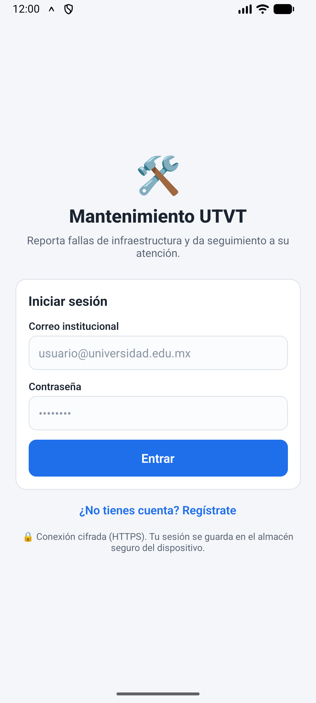
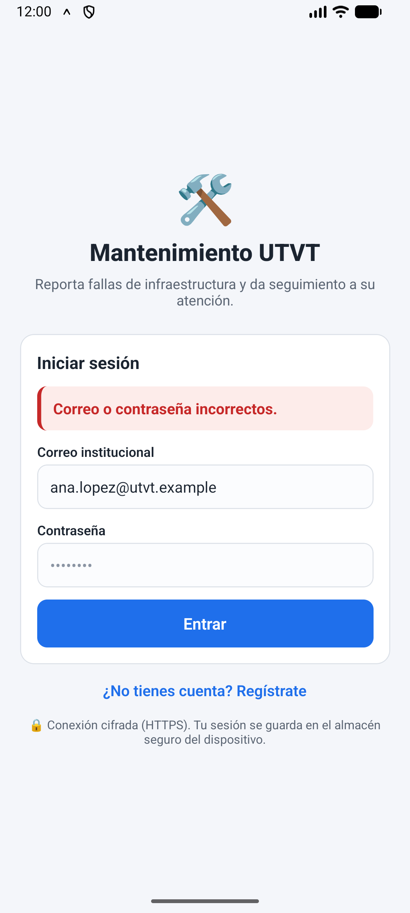
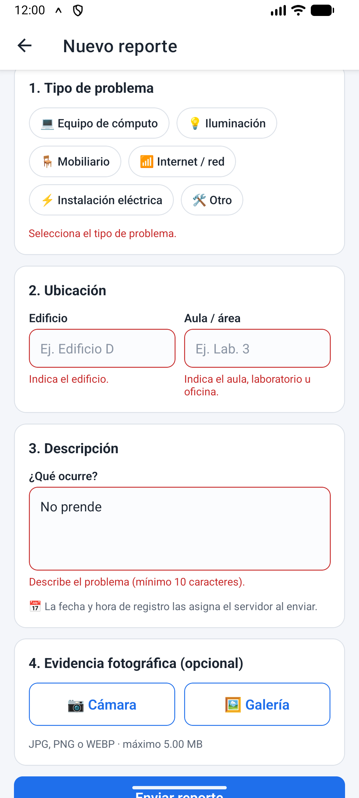
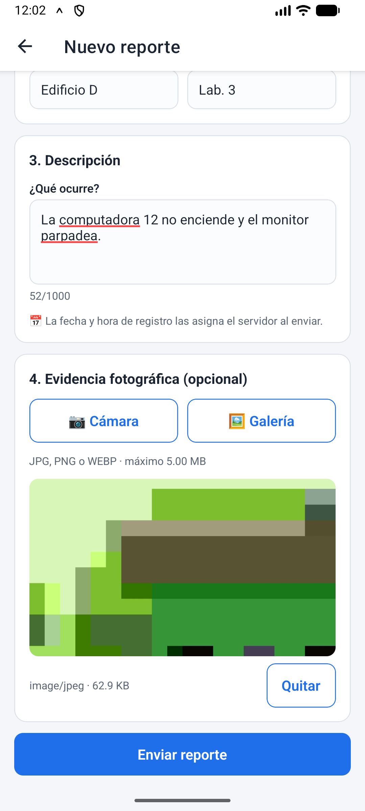
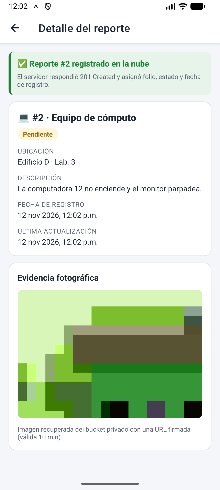
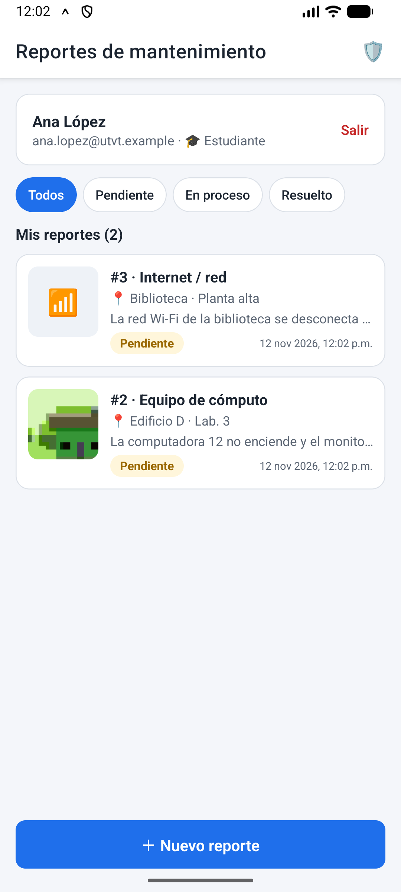
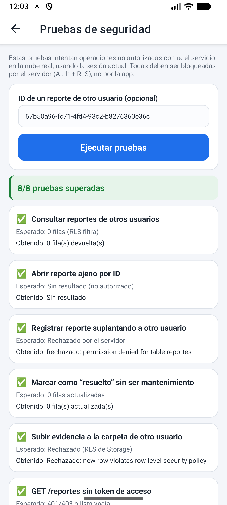
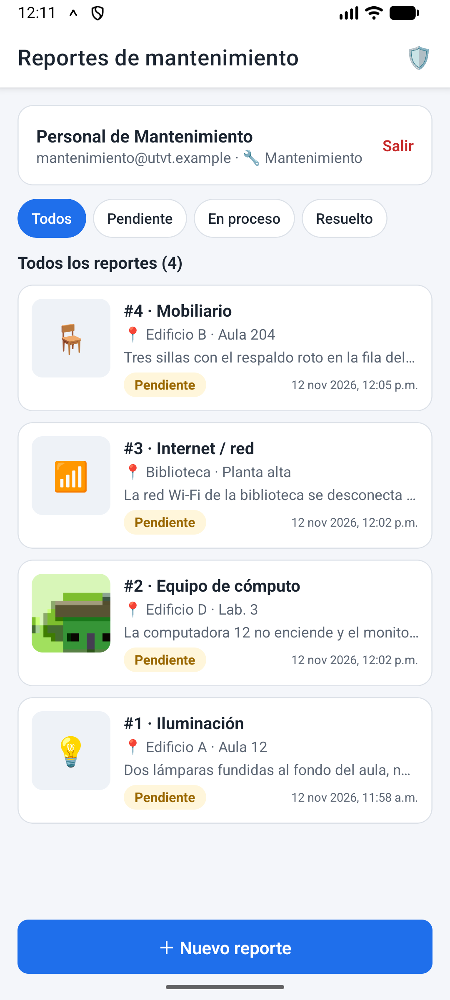
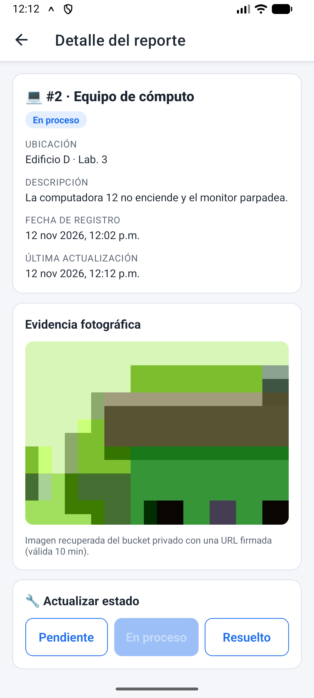
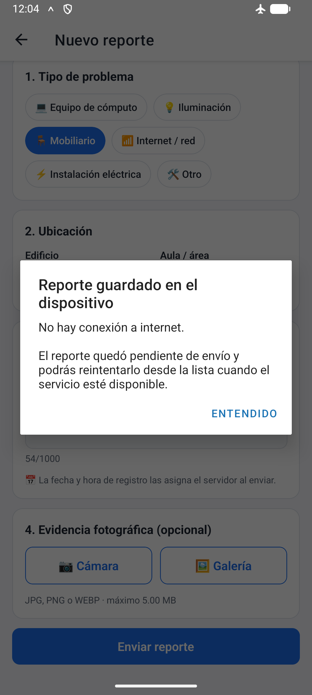
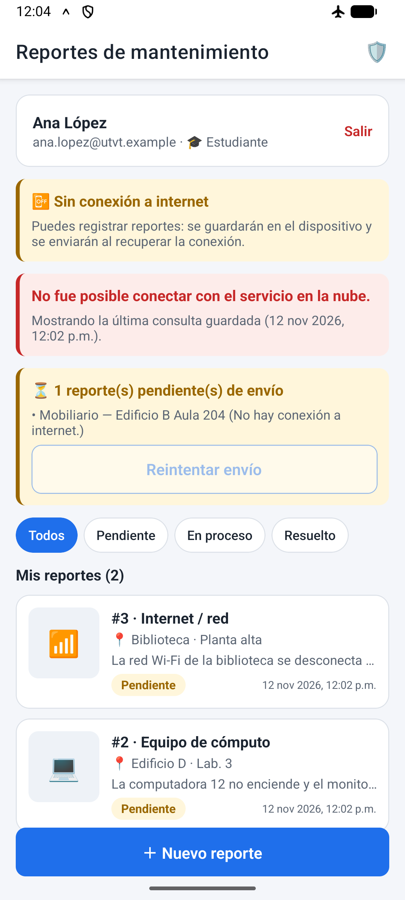
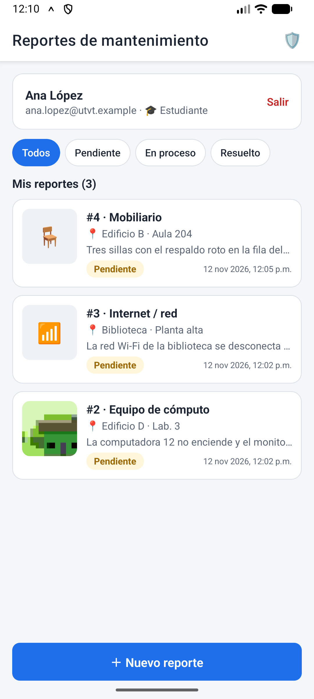
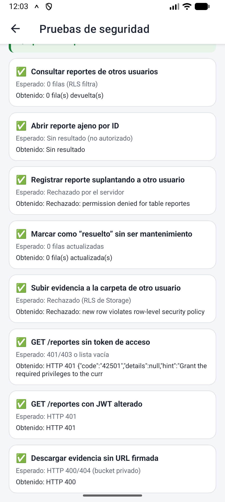
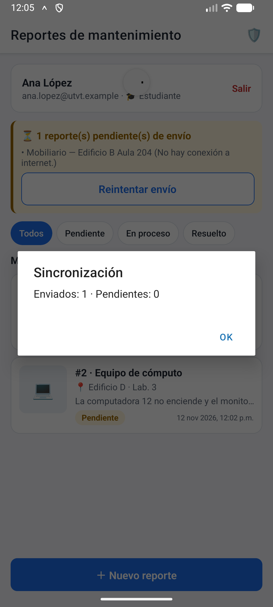
| Archivo | Responsabilidad |
|---|---|
src/app/login.tsx, registro.tsx | Autenticación (rutas públicas, protegidas con Stack.Protected). |
src/app/index.tsx | Lista de reportes, filtros, aviso offline, cola de pendientes y caché. |
src/app/nuevo.tsx | Formulario, validaciones, cámara o galería y envío o encolado. |
src/app/reporte/[id].tsx | Detalle, evidencia con URL firmada y cambio de estado (mantenimiento). |
src/app/seguridad.tsx, lib/pruebasSeguridad.ts | Pruebas automáticas de acceso no autorizado contra el backend real. |
src/lib/auth.tsx | Sesión, inicio de sesión, registro, cierre de sesión y bloqueo por intentos. |
src/lib/reportes.ts, storage.ts | Operaciones de integración (REST y Storage) y validaciones. |
src/lib/almacenSeguro.ts, red.ts, cola.ts, cache.ts | SecureStore, conectividad y errores, cola offline y caché. |
supabase/schema.sql | Tablas, roles, trigger de perfil, permisos por columna, RLS y bucket privado. |
Este caso me hizo ver que, cuando una app móvil se conecta a la nube, la app no es la frontera de seguridad: el servidor sí. Al principio es tentador “ocultar” un botón o filtrar los reportes por usuario en el código de la app, pero cualquiera puede descompilar el APK o llamar a la API directamente con otro ID. Por eso las decisiones importantes las movimos al backend: el rol lo asigna un trigger, cada fila se protege con RLS, las columnas sensibles no se pueden escribir y el bucket valida tipo y tamaño. La prueba P4 lo confirmó: con un token válido de estudiante, el servidor negó ver reportes ajenos, cambiar estados, subir a carpetas de otros o usar un token alterado.
También aprendí que la codificación segura y la buena experiencia de usuario no se contraponen. Validar en el cliente da respuesta inmediata, los mensajes genéricos protegen contra la enumeración de cuentas, guardar el token en el Keystore no cambia nada para el usuario, y la cola offline con id_cliente hace que una red inestable no provoque pérdida ni duplicación de reportes. En una universidad, donde la app la usan cientos de personas en redes compartidas, aplicar estos principios desde el diseño (mínimo privilegio, defensa en profundidad, nunca confiar en el cliente y no incluir secretos en la app) es lo que permite confiar en los datos del sistema de mantenimiento.